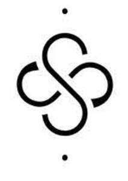

Trade Mark Journal No.2025/050 12 December 2025
UK00004303623 1 December 2025 (9,14,16,18,20,24,25)

- Class 9
- Mobile phone cases; carrying cases for mobile phones; accessories for mobile phones; sunglasses; eye glasses; accessories for glasses.
- Class 14
- Imitation leather key chains; leather key rings; key rings; lapel pins; ornamental lapel pins; decorative pins; jewellery; brooches; cufflinks; watches.
- Class 16
- Printed matter; journals; passport covers; leather book covers; covers [stationery]; note cards; encouragement and inspirational messages cards; stationery; notepads; paper.
- Class 18
- Bags; handbags; tote bags; carry all bags; pouches; leather and imitations of leather; purses; wallets; umbrellas; umbrella covers; luggage.
- Class 20
- Home furnishings; pillows; beddings; cushions; furniture; picture frames; mirrors; stools; chairs.
- Class 24
- Fabrics; textile fabrics; textile prints for the making of clothing; textiles for furnishings; soft furnishings; textiles for interior decorating; materials for soft furnishings; covers for pillows; blankets; bed linen; duvets; pillow cases; bedspreads; bed coverings; bath towels; bath sheets; towels; beach towels; household linen; curtains; shower curtains.
- Class 25
- Clothing, footwear, headgear; headbands; sarongs; rain boots; swimwear; clothing for sports; sports underwear.
TRÈFLE DESIGNS LIMITED
Representative: Neo Percept IP Limited